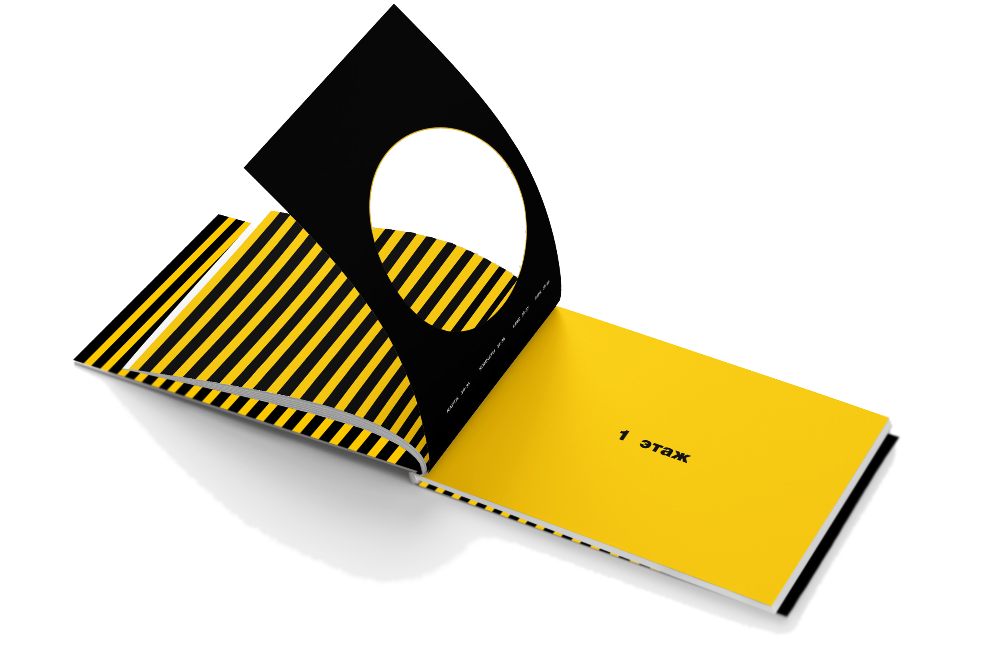
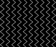

Книга
В 3 модуле одной из задач была разработка книги по простраству проекта. В ней рассказаны все особенности зоопарка, показан интерьер и экстерьер помещения
Особенности

Шмуц-титул
Особенностью книги являются разделяющие главы страницы. За концепцию создания был взят графический элемент в виде лунки

На обратной стороне страницы
с вырубкой присутствует навигация
по главе с указанием номера страниц
в разделе
Паттерны

Основными паттернами являются полоски, которые сделаны на основе контрастности. Они также присутствуют на форзацах и титульном листе книги



Реализация

Чтобы не потеряться следуйте по тропинкам с черно-белыми полосками, а сориентироваться по этажам поможем крупная настенная графика